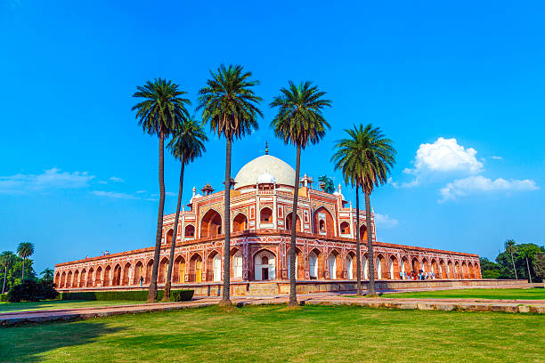

01
Red Fort (Lal Qila)
A majestic 17th-century Mughal fortress of red sandstone built by Emperor Shah Jahan, serving as the site of India's Independence Day address.

Discover India's historic capital — where seven ancient cities whisper through monumental Mughal forts, soaring minarets, chaotic spice bazaars of Old Delhi, and grand modern avenues.
Explore Delhi ↓Delhi is a pulsating megalopolis and national capital that bridges thousands of years of imperial history—from the Mahabharata's Indraprastha to Sultanate capitals and British Lutyens' Delhi.
From navigating the labyrinthine alleys and culinary havens of Chandni Chowk to admiring the towering sandstone majesty of Qutub Minar and India Gate, Delhi offers an immersive sensory journey through Indian civilization.
UNESCO World Heritage monuments, imperial war memorials, and historic tombs across Delhi.
A majestic 17th-century Mughal fortress of red sandstone built by Emperor Shah Jahan, serving as the site of India's Independence Day address.

A towering 73-meter victory minaret built in 1193, surrounded by ancient Indo-Islamic pillars, the iron pillar, and archaeological ruins.

A 42-meter war memorial arch standing proudly along Rajpath, surrounded by lush lawns, evening lights, and the Amar Jawan Jyoti.

The magnificent predecessor to the Taj Mahal — an elegant Mughal garden mausoleum showcasing Persian architecture and water channels.
Delhi's culinary landscape is legendary — legendary for rich Mughal non-vegetarian feasts in Old Delhi, fiery street chats, and vibrant modern café culture.

Centuries of royal court history preserved in monuments, Sufi shrines like Nizamuddin Dargah, and classical Hindustani music traditions.
Historic wholesale markets like Chandni Chowk, Khari Baoli spice market, and Kinari Bazaar buzzing with life since the 17th century.
A seamless blend of modern art galleries, world-class metro connectivity, theater hubs at Mandi House, and global culinary venues.
Grand celebrations of Diwali, Eid, Gurpurab, and Christmas reflecting India's united secular fabric.
Discover all states, union territories, local food specialties, and centuries of living traditions.
← Back to Union Territories